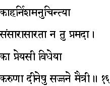
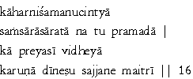

|

|
Verse 16 - Meaning:
Q: What should one always think of (in his mind) throughout day and night ? (kahar nisam anu-cintya)
A: About the non-permanance of the worldly and materialistic life and certainly not about thoughts that give sexual excitement.
Q: What should be one's favorite duty in life ?
A: Being kind to all the suffering living beings and making friendship with the honest and holy men. (karuna - diineshu, saj-jana maitri ) [karuna-kindness; diina - suffering ones; maitri-friendhip]
|